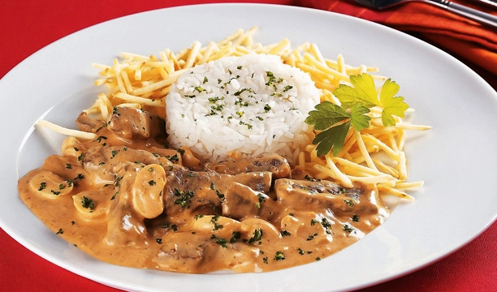
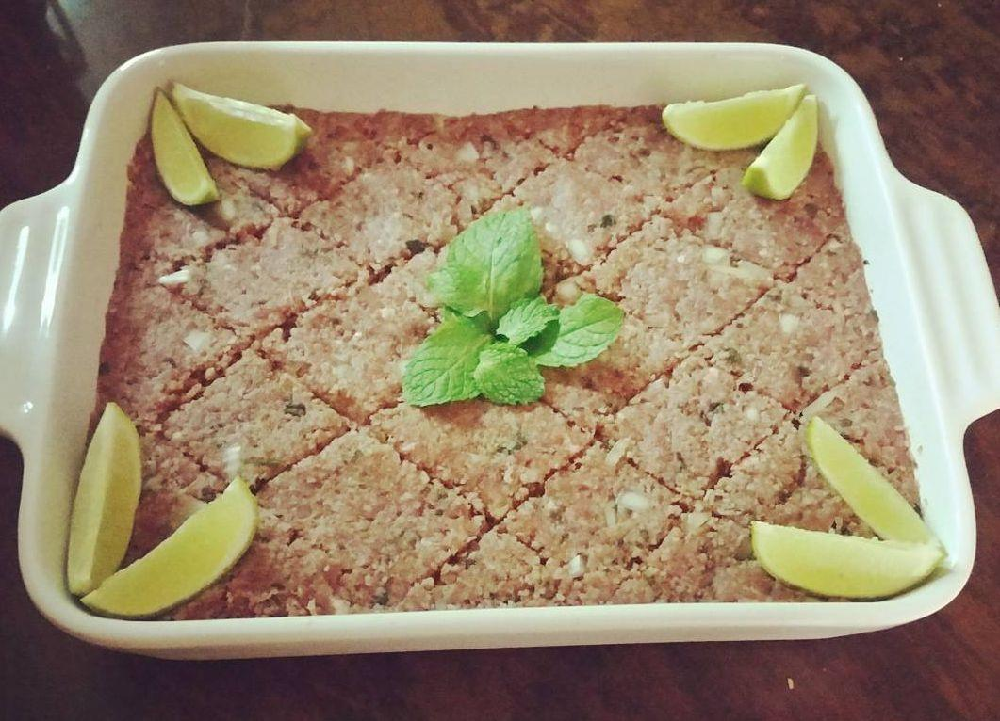
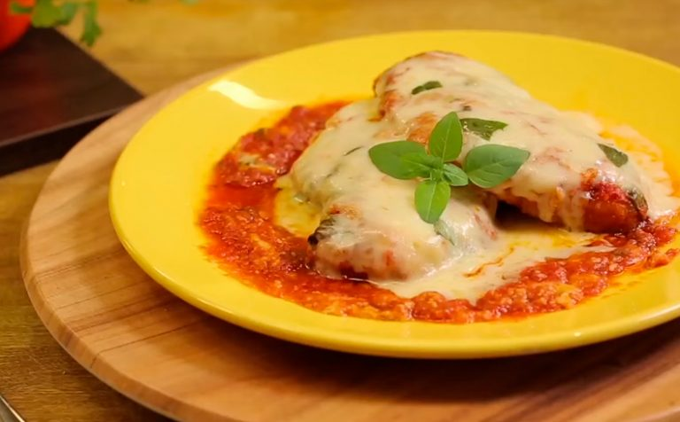

1. Strogonoff de Carne:
Ingredientes (8 porções)
- 1 kg de carne de sua preferência, como patinho ou coxão mole
- 3 cebolas médias
- 1 vidro de champignon ou palmito - sal a gosto
- pimenta-do-reino a gosto
- 2 latas de creme de leite
- 3 tomates picados sem pele e sem sementes
- 3 colheres (sopa) de óleo de oliva
- 2 colheres (sopa) de ketchup
- 1 cubo de caldo de carne dissolvido em 100 ml de água
(Modo de preparo : 30min)
- Em uma panela, adicione o óleo, a carne, a cebola, os tomates, o caldo de carne e deixe cozinhar por 20 minutos.
- Acrescente o ketchup e o champignon e deixe cozinhar até obter um molho consistente e cremoso.
- Desligue o fogo e acrescente o creme de leite sem soro.
- Mexa até incorporar o molho ao creme.
- Coloque em uma forma refratária e decore com tempero e batata palha.
2. Quibe crú:
Ingredientes (4 porções)
- 700 g de patinho moído (deve ser bem limpo, sem gordura)
- 250 g de trigo de quibe
- 1 cebola grande
- 1 maço de hortelã
- 1 maço de hortelã
- 3 tomates picados sem pele e sem sementes
- 1 colher de chá de pimenta síria
- 3/4 xícara de água bem gelada
- sal a gosto
(Modo de preparo : 1h)
- Primeiro lave bem o trigo de quibe até a água sair clarinha. Depois deixe de molho de forma que fique pelo menos 2 dedos de água acima do trigo, porque ele cresce.
- Pique bem a cebola e hortelã.
- Escorra toda a água do kibe em um pano limpo.
- Coloque a carne, o trigo sequinho, cebola e hortelã picados, sal, pimenta síria, azeite e por fim a água gelada e misture bem até que todos os ingredientes estejam homogêneos.
- Coloque em uma travessa, regue com um pouco mais de azeite e coloque na geladeira.
- Sirva depois de 1 hora com o pão sírio.
3. Filé de frango à parmegiana:
Ingredientes (8 porções)
- 6 filés de peito de frango
- 2 dentes de alho
- sal a gosto
- pimenta-do-reino a gosto
- 4 colheres de (sopa) de maionese
- 2 xícaras de (chá) de farinha de rosca
- 1 lata de molho de tomate
- 200 g de mussarela
- óleo o suficiente para untar
- orégano a gosto
(Modo de preparo : 50min)
- Coloque os filés entre 2 filmes plásticos.
- Bata suavemente com o martelo de carne para ficarem com a mesma espessura.
- Tempere - os com o alho, o sal e a pimenta.
- Passe - os pela maionese e a farinha de rosca.
- Coloque em uma assadeira untado com o óleo.
- Leve ao forno médio por uns 30 minutos.
- Retire do forno, cubra com a mussarela, o molho e o óregano.
- Leve ao forno novamente só para gratinar.
- Sirva em seguida acompanhado de arroz branco e batata palha.